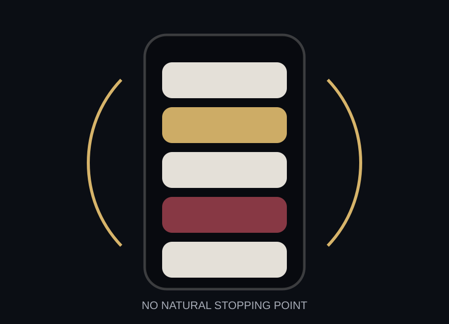

Notifications interrupt first.
A notification does not wait for attention; it competes for it. Common Sense Media found that over half of participants in a youth smartphone study received 237 or more notifications per day.
Attention became valuable because time became measurable. In the attention economy, the question is not only what users want to see. It is how long they can be kept looking.

A notification does not wait for attention; it competes for it. Common Sense Media found that over half of participants in a youth smartphone study received 237 or more notifications per day.
Infinite scroll creates a surface where the next item is always already there. The user does not have to choose to continue very often; the design continues for them.
Likes, replies, views, streaks, and messages become signals that something may be waiting. The uncertainty can be more powerful than the reward itself.
The feed is designed like a hallway without a final room. It gives movement without arrival.
It is pulled in pieces: one buzz, one red badge, one suggested video, one message preview, one quick check that becomes a longer session. The phone becomes powerful because the interruptions are small enough to feel harmless.
That is why the attention economy is difficult to notice. It does not always feel like addiction. Sometimes it feels like staying updated, being available, or avoiding the discomfort of doing nothing.
You do not have to turn it off right now. Just name it honestly.
Next Exhibit: The Habit Loop